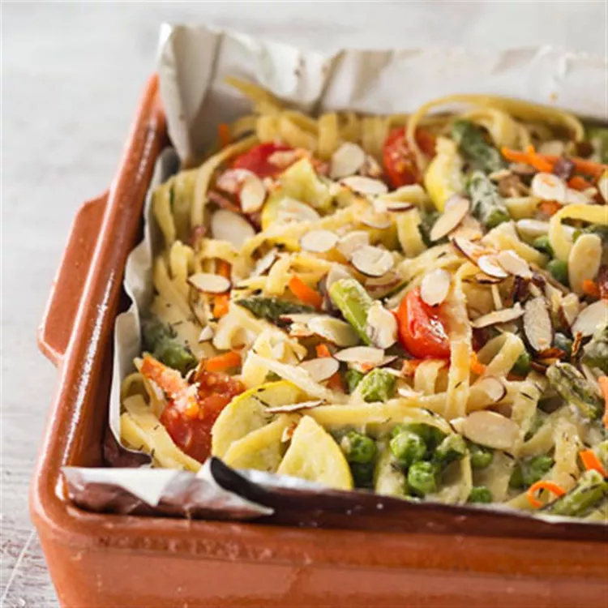

Pasta Primavera

Baked Pasta Primavera
Bake veggies with creamy sauce and pasta for a yummy summertime dish-and
with Reynolds Wrap® Pan Lining Paper there's no cleanup!
Ingredients
- 1 sheet Reynolds Wrap® Pan Lining Paper
- 8 ounces dried fettuccine or linguine pasta
- 1 cup shredded carrots*
- 1 cup fresh or frozen peas
- 1 cup sliced yellow squash
- 1 cup fresh asparagus spears, cut into 1-inch pieces
- 2 tablespoons butter
- ...
Steps
-
Preheat oven to 400 degrees F. Line a 2-quart rectangular baking dish with Reynolds Wrap®
Reynolds Wrap® Pan Lining Paper, parchment side up. No need to grease dish.
-
Cook the pasta according to package directions in a Dutch oven, adding the
carrots, peas, squash, and/or asparagus for the last 3 minutes of cooking time
Drain, reserving 1/4 cup of the pasta water. Return the pasta mixture to the
Dutch oven. cover and set aside.
- ...